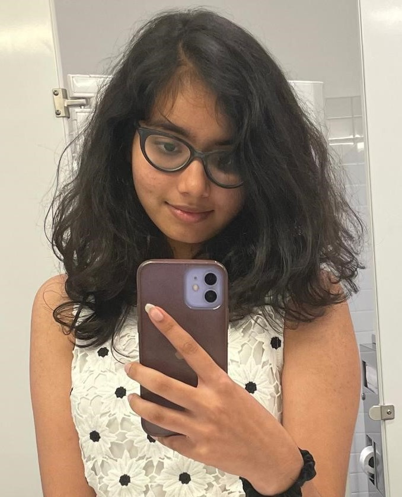

About Me
Hi, my name is Tanvi Reddy Kesireddy and I'm studying at the University Of Wisconsin-Madison. I am a sophomore majoring in Computer Sciences and Data Science. I've studied for 15 years in India, my home. I did my junior high at Niraj Public School and senior high at FIITJEE. I'm a bit of an introvert. My hobbies include painting, dancing and watching TV. I am a big fan of Korean dramas and K-POP. In the future I would love to work in the field of Artificial Intelligence and Robotics.
Gallery
Click on the above links to know more about me!